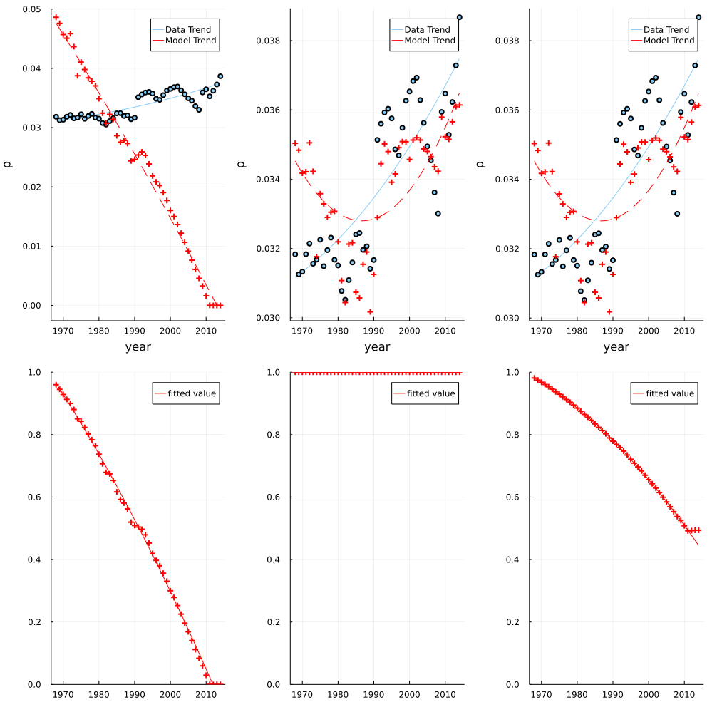
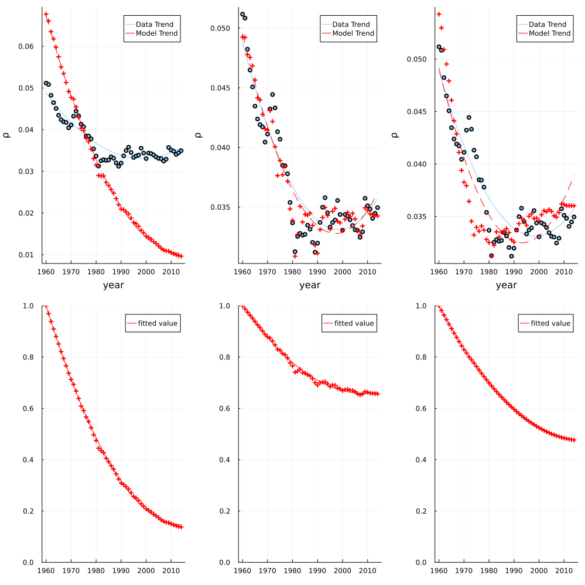
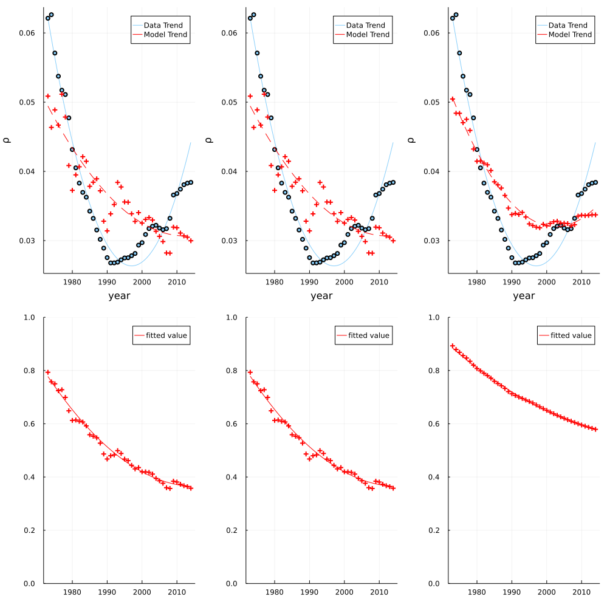
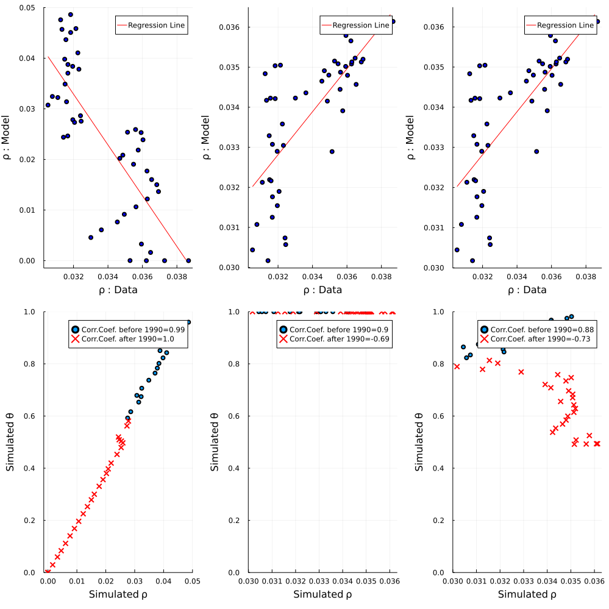
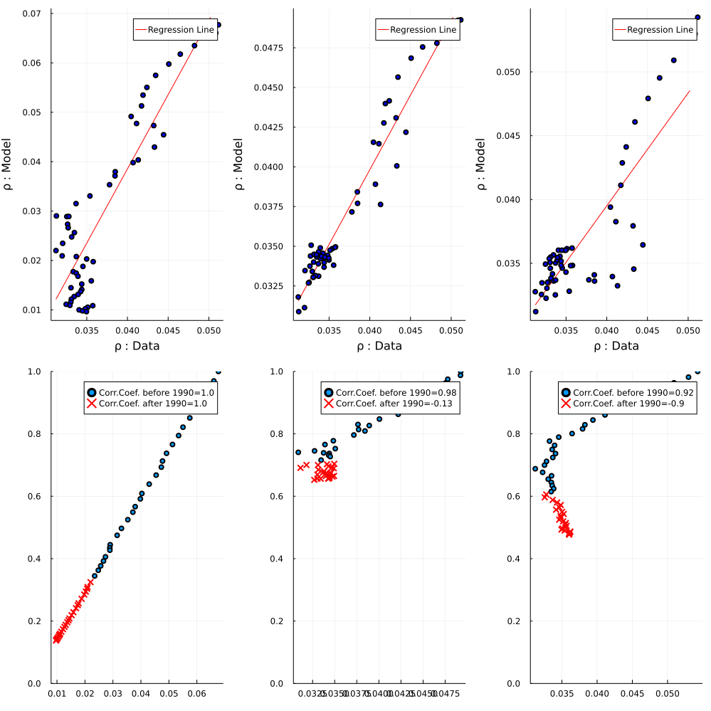
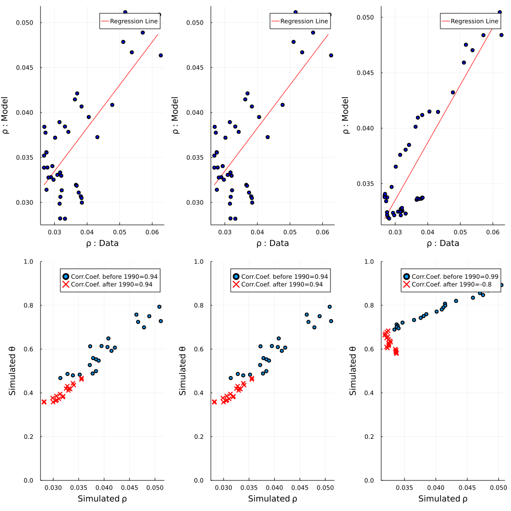
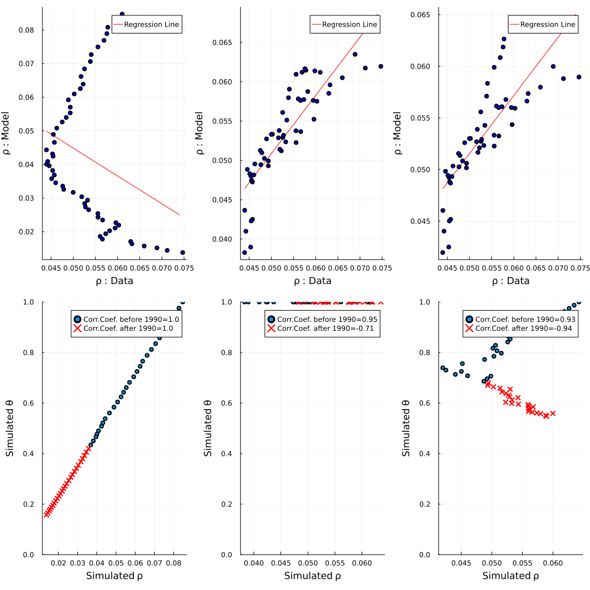
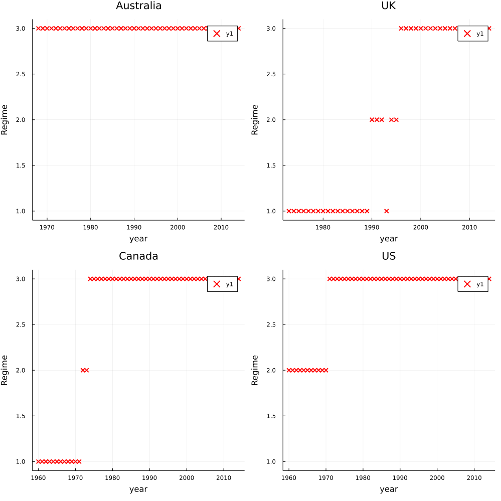
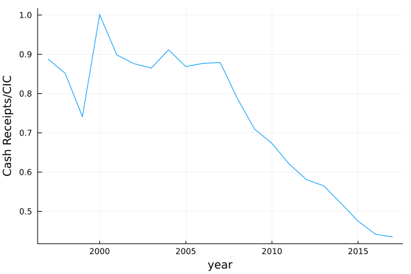
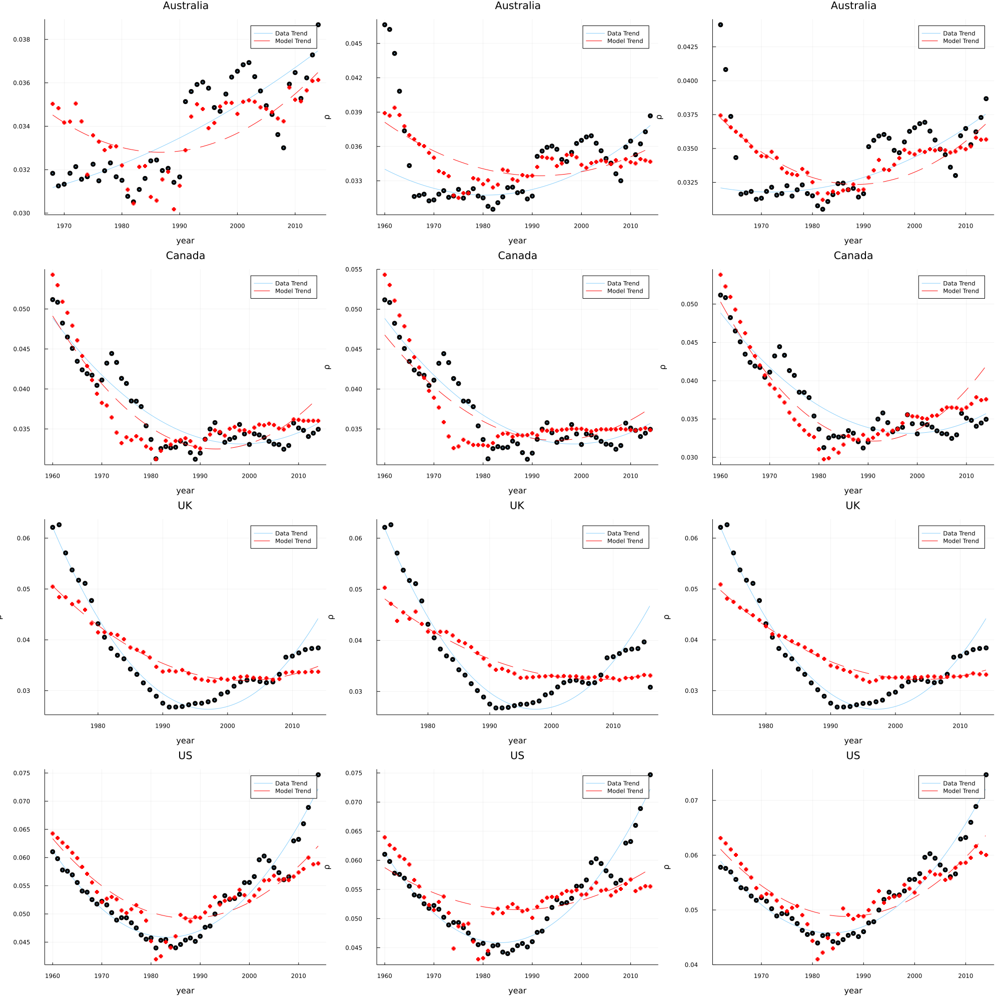

Our Replication of The Cash Paradox (Jiang & Shao, 2019)
This replication study was part of our evaluation for the course Numerical Methods at SciencesPo Paris in Spring 2021
In this replication study, we do ...
CashParadox.load_data — Typeload_data(irflag,flag)
Creates a struct with the data for a given country and interest rate specification.
CashParadox.Calibrate — MethodCalibrate(irflag,flag,model)
Gives the value for parameters given a interest rate source, a country, and a model.
CashParadox.Table1 — MethodTable1()
Store all results from Table 1 in a DataFrame
CashParadox.Table2 — MethodTable2(x)
Store all results from Table 1 in a DataFrame
CashParadox.eqn_LWfit — Methodeqn_LWfit
Matching the time series of CIC_GDP ratio in the data with the simulated series in the Lagos-Wright model.
CashParadox.eqn_Regime201610 — Methodeqn_Regime201610
Extensive margin: This equation is necessary to solve for q2 and y in regime 2.
CashParadox.eqn_noconnfit — Methodeqn_noconnfit
Matching the time series of CIC_GDP ratio in the data with the simulated series in the NCF model.
CashParadox.eqn_tfit — Methodeqn_tfit
Matching the time series of CIC_GDP ratio in the data with the simulated series in the full model
CashParadox.fig5 — Methodfig5(flag)
Creates figure 5 for a specific country.
CashParadox.figA2 — MethodfigA2(flag)
Creates figure A2 for a specific country.
CashParadox.figA3 — MethodfigA3()
Creates figure A3 (all countries)
CashParadox.figA4 — MethodfigA4()
Creates figure A4
CashParadox.figD1 — MethodfigD1(x)
Creates figure D1
CashParadox.figD2 — MethodfigD2()
Replicates figure D2.
CashParadox.figsub5 — Methodfigsub5(irflag,flag,model)
Creates the subplots for figure 5 for a given interest rate specification, model, and country.
CashParadox.figsubA2 — MethodfigsubA2(irflag,flag,model)
Creates the subplots for figure A2 for a given interest rate specification, model, and country
CashParadox.figsubA3 — MethodfigsubA3(flag)
Creates figure A3 for a specific country
CashParadox.figsubD2 — MethodfigsubD2(irflag,flag,model)
Creates subplots of figure D2 for a given country, interest rate specification and model
CashParadox.vs — Methodvs(irflag,flag,model)
Returns simulated θ and simulated ρ for a specified model
CashParadox.vδ — Methodvδ(irflag,flag)
Computes vδ given a country and interest rate specification.
Replication of model predictions: Figures 5a-5d
Figure 5a: AUSTRALIA 
Figure 5b: CANADA 
Figure 5c: UK 
Figure 5d: US 
Replication of model predictions: Figures A2a-A2d
Figure A2a: AUSTRALIA 
Figure A2b: CANADA 
Figure A2c: UK 
Figure A2d: US 
Replication of regime changes over time: Figure A3 
Replication of The Value of ATM withdrawals over CIC: Figure A4 
Replication of Cash receipts from circulation in the Federal Reserve Banks: Figure A5 
Replication of Different measures of nominal interest rates: Figure D1 
Replication of CIC/GDP with different interest rate specifications: Figure D2 
Replication of Table G.1: Calibration results: unregistered activities 
Replication of Table D.1: Parameter values and Table D.2: Model performance comparison 
end